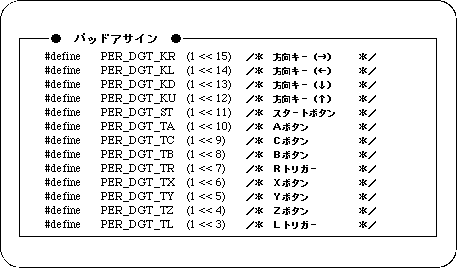
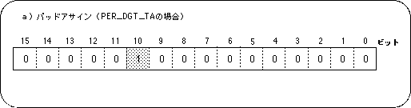
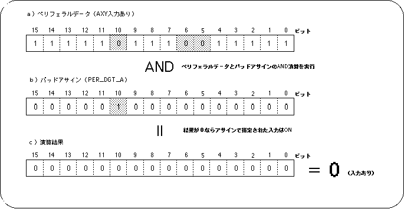

<HTML>
<HEAD>
<TITLE> Distinction of input data </​​TITLE>
</HEAD><BODY>

<P> <A HREF="pr9-2-3.htm"> Return to previous page </A> | <A HREF="../index.htm"> Return to menu </A> | <A HREF = "pr9-3.htm"> Go to next page </A> </BR> </P> <HR>

<H3>
Determining input data
</H3>

<P>
The input information from the device is determined by comparing the peripheral data described above with the assignment data described below. <BR>
The assignment data is defined in the header file “sl_def.h” attached to the system. For example, the assignment corresponding to each input device of Saturn PAD is defined as follows.
</P>

<H4> Figure 9-5 #define value of assignment data (Saturn PAD) </H4>


<P>
Since these assignments are used for collation with peripheral data, they correspond to the peripheral data length of each device. For example, the A button assignment for Saturn PAD is expanded as shown in the following figure (16-bit length). In the assignment data, the bit corresponding to the input device to be identified is set to 1, and the other bits are set to 0.
</P>

<H4> Figure 9-6 Pad assignment contents (PER_DGT_TA) </H4>


<BLOCKQUOTE><P>
Note) Only the same bit (10th bit) that operates when the A button is input is 1.
</P></BLOCKQUOTE>

<P>
In the case of Saturn PAD, the input device consists of simple switch ON / OFF, so the switch status can be confirmed by logical operation of assignment data and peripheral data.
</P>

<P>
Figure 9-7 shows an example of checking the input status by AND operation of peripheral data and assignment data.
If the input device specified by the assignment data is ON, 0 is output as the operation result.
</P>

<P>
This method is also adopted in the sample program, and it is designed to display a sprite on the screen if the input device pointed to by the pad assignment is ON.
</P>
 
<H4> Figure 9-7 Confirmation of input status using assignment data </​​H4>


<P>
In this example, data is collated by AND operation of peripheral data and assignment data, but it is not always necessary to adopt this method.
</P>

<HR>
<P> <A HREF="pr9-2-3.htm"> Return to previous page </A> | <A HREF="../index.htm"> Return to menu </A> | <A HREF = "pr9-3.htm"> Go to next page </A> </BR> </P> </BODY> </HTML>